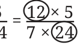
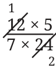

Multiply the following fractions and express the product in its lowest form:
\(\frac{12}{7} \times 524\)
Instead of multiplying the numerators (12 and 5) and denominators (7 and 24) first and then simplifying, we could do the following:
\(\frac{12}{7} \times 5\)

We see that both the circled numbers have a common factor of 12. We know that a fraction remains the same when the numerator and denominator are divided by the common factor. In this case, we can divide them by 12.

\(= 1 \times 5 = 5\) . \(7 \times 2 14\)
Let us use the same technique to do one more multiplication.
\(\frac{14}{15} \times 25\)
\(= 1 \times 5 = 5\) . \(3 \times 3\)
When multiplying fractions, we can first divide the numerator and denominator by their common factors before multiplying the numerators and denominators. This is called cancelling the common factors.
A Pinch of History
In India, the process of reducing a fraction to its lowest terms - known as apavartana - is so well known that it finds mention even in a non-mathematical work. A Jaina scholar Umasvati (c. 150 CE) used it as a simile in a philosophical work.
Figure it Out
- 1.A water tank is filled from a tap. If the tap is open for 1 hour, \(\frac{7}{10}\) of
the tank gets filled. How much of the tank is filled if the tap is open for
- (a)\(\frac{1}{3}\) hour ____________
- (b)\(\frac{2}{3}\) hour ____________
- (c)\(\frac{3}{4}\) hour ____________
- (d)\(\frac{7}{10}\) hour ____________
- (e)For the tank to be full, how long should the tap be running?
- 2.The government has taken \(\frac{1}{6}\) of Somu’s land to build a road.
What part of the land remains with Somu now? She gives half of